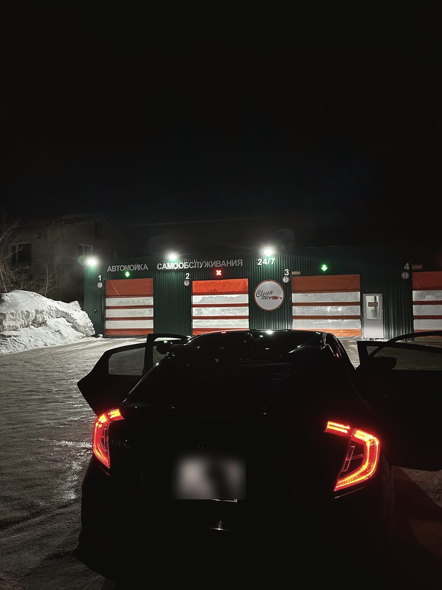
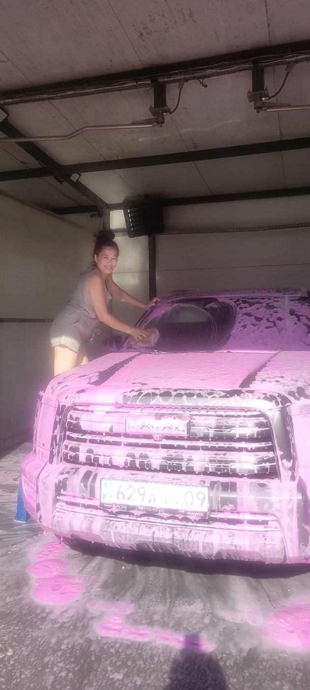
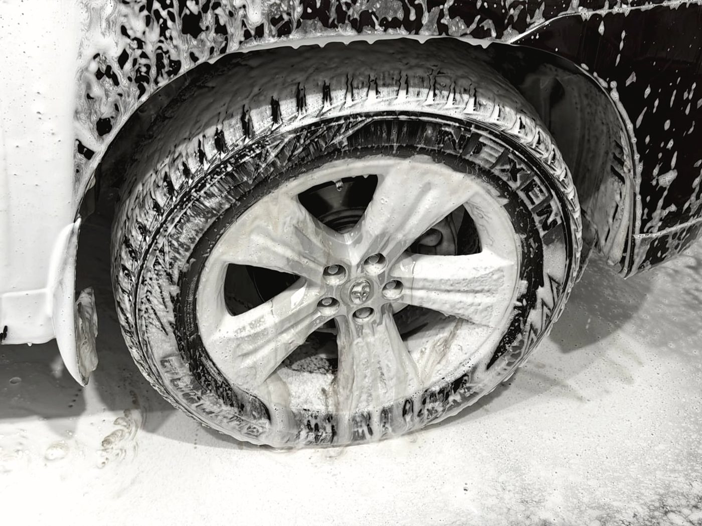
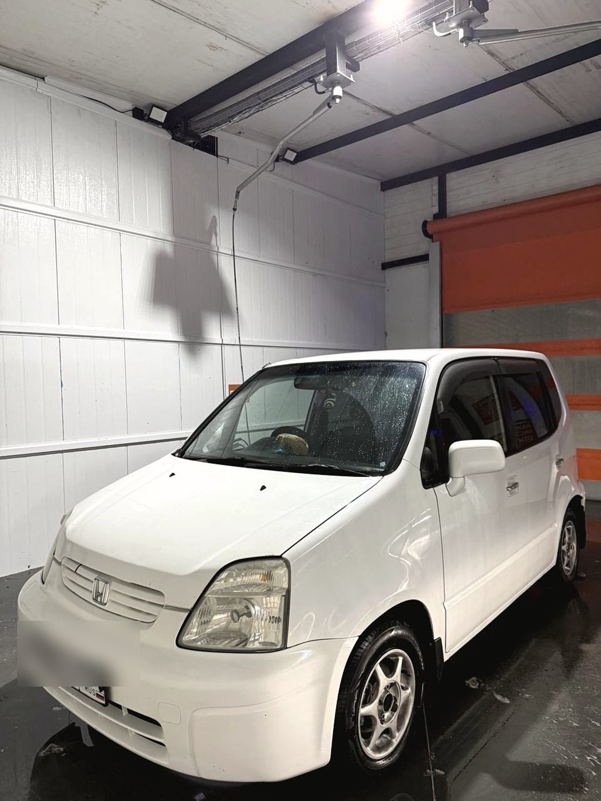
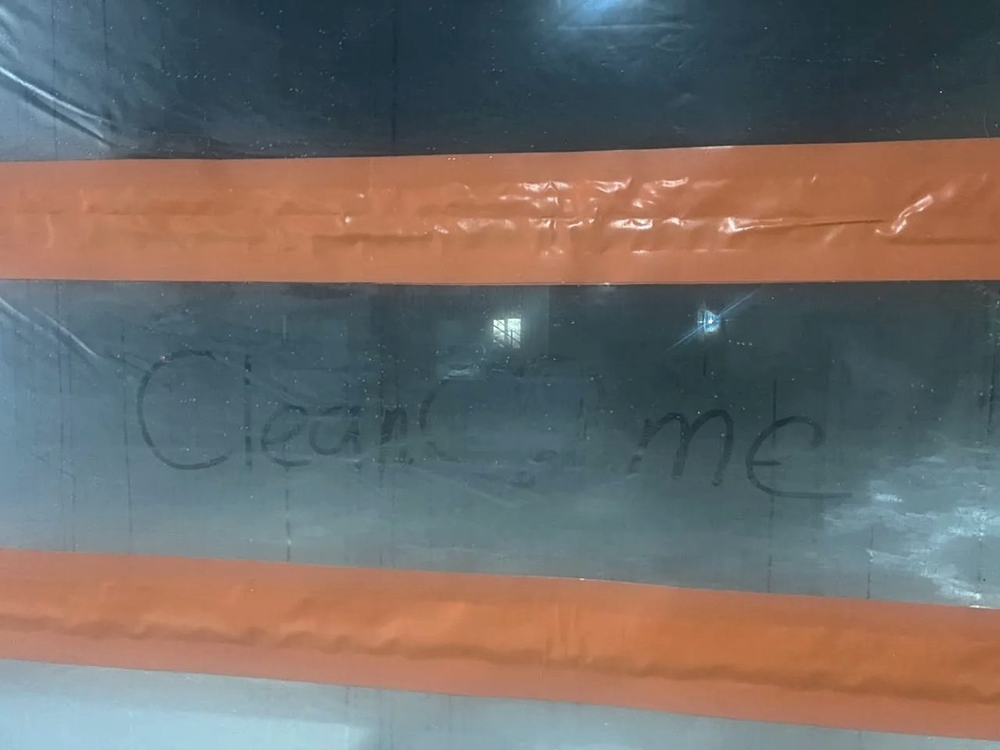
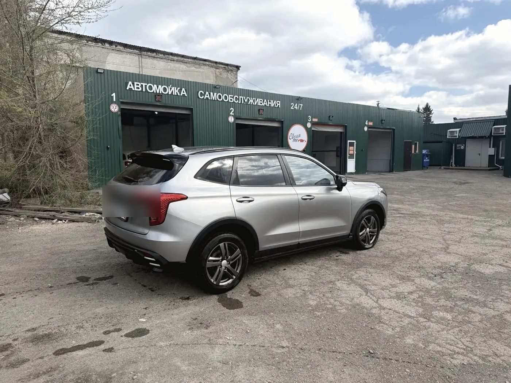
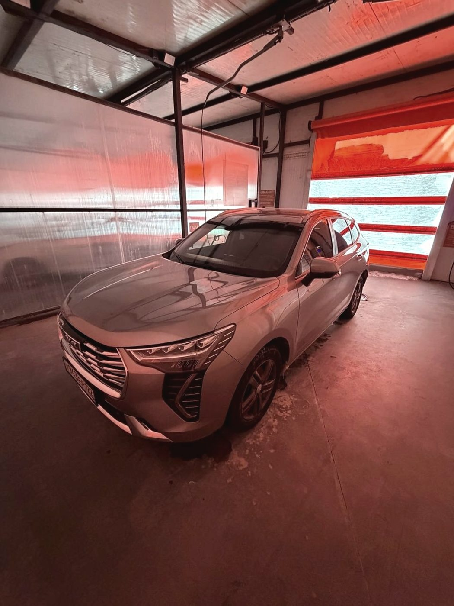
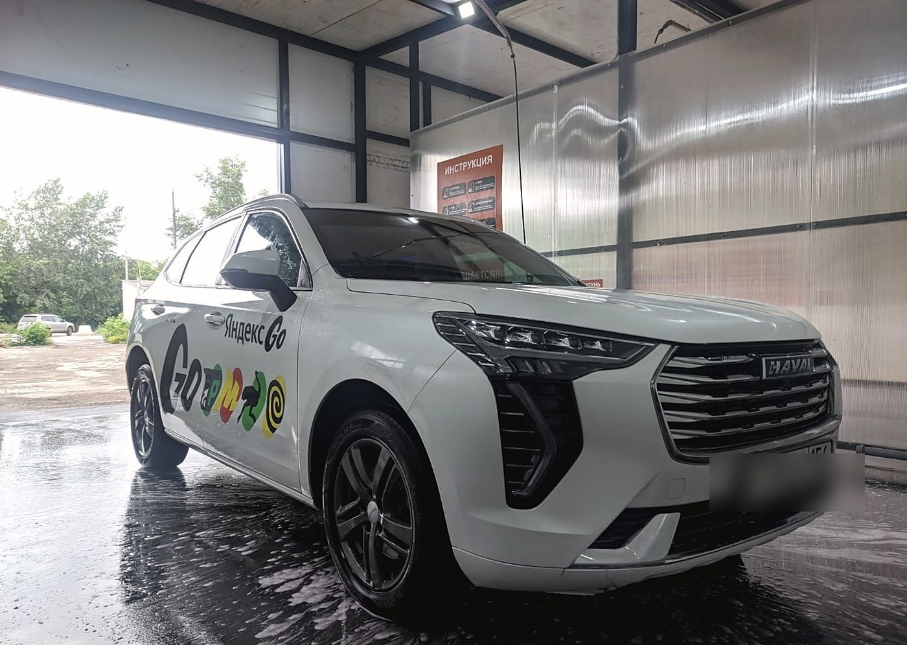
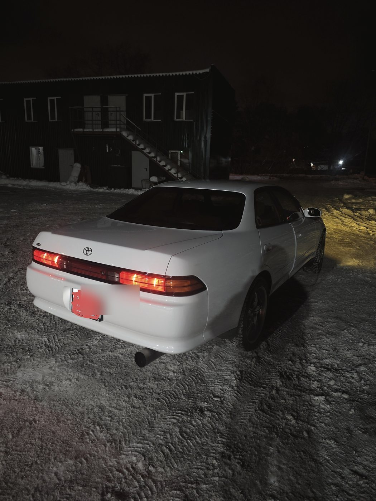

Мыть будете вы
Это мойка самообслуживания: мы даём тёплый бокс, воду, пену, воск и осмос — дальше вы. Если хочется отдать ключи и уйти пить кофе, вам нужен другой формат, и это нормально.
Тёплая мойка самообслуживания · Автогенная улица, 140 к5 · Октябрьский район
Четыре тёплых поста, которые работают круглосуточно и без выходных. В январе в минус тридцать здесь можно спокойно вымыть машину руками — вода не мёрзнет, пена работает, пистолет не превращается в ледышку. Летом сюда заезжают на пять минут, чтобы смыть пыль и мошек, пока они не засохли.

Первый раз
Если вы на самообслуживании впервые, порядок именно такой. Администратор на площадке подскажет и покажет — про это в отзывах пишут отдельно, — но лучше приехать, уже понимая, что за чем.
Пройдите машину водой под давлением сверху вниз. Задача — снять песок, чтобы он не работал наждачкой на следующем шаге.
Пена наносится снизу вверх, чтобы не было потёков. Наша пена плотная — ложится и держится, а не стекает сразу.
Минута-полторы. Это самый частый пропущенный шаг: люди смывают пену сразу и потом удивляются, почему грязь осталась.
Тщательно, включая пороги, арки и низ дверей. Здесь же промойте колёса, пока грязь не засохла.
Даёт блеск и облегчает следующую мойку. Наносится на чистый мокрый кузов, после смывается или оставляется по инструкции на посту.
Финальная вода без солей не оставляет разводов. После неё машину достаточно обдуть или протереть.
Что есть
Зимой это принципиально: тепло у нас не «чуть выше нуля», а нормальная рабочая температура для воды, пены и рук.
Про это пишут чаще всего: пистолеты исправны, напор мощный, оборудование не старое. Пост, на котором что-то не работает, — не пост.
Пена ложится густо и разъедает грязь, после смыва не остаётся разводов. Воск даёт блеск, а не мыльные следы.
На площадке. Салон можно привести в порядок здесь же, а не искать, где пропылесосить, отдельно.
Посты рассчитаны и на грузовой транспорт — редкость для мойки самообслуживания в черте города.
Время считается по подаче воды и по факту. «Время тарифицируется честно» — это цитата из отзыва, и мы держимся за неё.



Честно
Это мойка самообслуживания: мы даём тёплый бокс, воду, пену, воск и осмос — дальше вы. Если хочется отдать ключи и уйти пить кофе, вам нужен другой формат, и это нормально.
Освежить кузов летом можно за пару минут и пару сотен рублей. Полноценно вымыть машину — примерно за то время, за которое вы выпили бы кофе в зале ожидания обычной мойки.
Планируйте: коврики и мусор из салона лучше вытряхнуть до того, как вы запустите пост. Так вы не потратите оплаченные минуты впустую.
Он на площадке и реально помогает: показывает, как пользоваться постом, и подсказывает, в каком порядке мыть. В отзывах его благодарят чаще, чем оборудование.


Отзывы · 4,8 из 5 по 491 оценке в 2ГИС
«Напор мощный, пена густая и отлично разъедает грязь. Время тарифицируется честно»
Евгения · отзыв в 2ГИС · лето 2026
Летом, когда машина быстро покрывается пылью и мошками, эта мойка просто спасение. За пару минут можно быстро освежить кузов, а заодно качественно промыть колёса и пороги, чтобы грязь не засохла.
Степан Голубев · 17 августа 2026
Особая благодарность администратору: быстро сориентировал и подсказал пару лайфхаков для качественной мойки. Видно, что человек в теме и реально хочет помочь.
Максим · 14 июля 2026
Приятно удивлён. Всё оборудование работает без сбоев, пена ложится густо, воск блестит. Удобно, что можно приехать в любое время. Справился за 10 минут, машина блестит!
Андрей Махеев · 6 августа 2026
Первый раз пользовалась такой мойкой самообслуживания — администратор Юрий помог, показал, как пользоваться.
Анастасия Матвиенко · 15 июля 2026


Контакты
